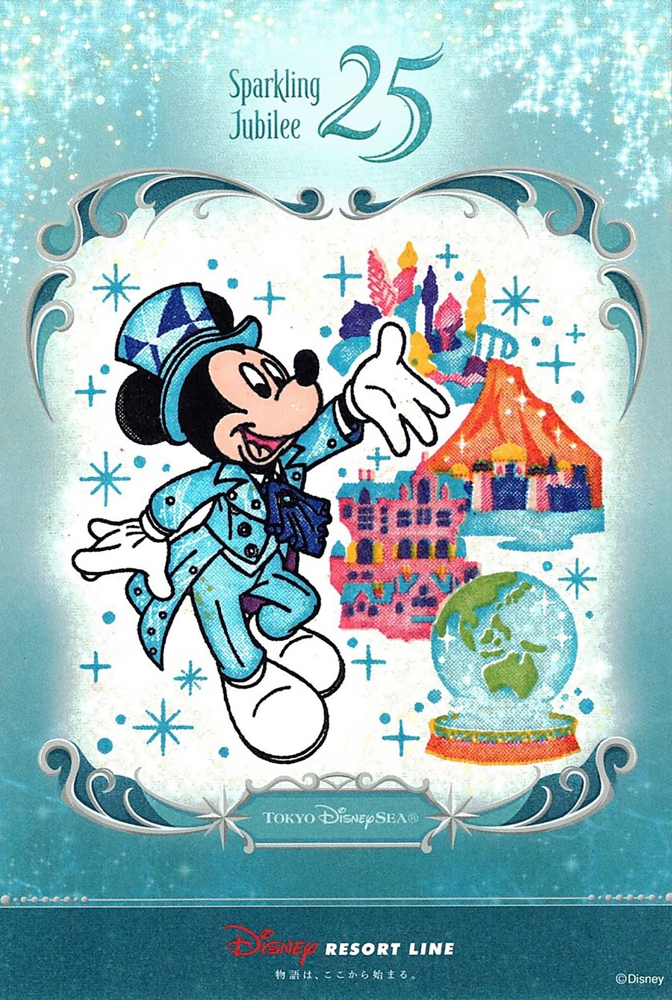

リゾートラインで楽しむ25周年スタンプラリー
今回のスタンプラリーは、東京ディズニーシー25周年「スパークリング・ジュビリー」にあわせて行われている期間限定の企画です。スタンプは全部で8種類。ディズニーリゾートラインの各駅を巡り、色の違うスタンプを重ねて押すことで、ひとつのイラストができあがります。
スタンプをひとつ押すたびに絵が少しずつ完成していくため、移動そのものも楽しみのひとつになります。駅を巡る順番は決まっていないので、好きな駅から始められます。
参加方法と事前に知っておきたいこと
- 開催期間：2026年9月4日（金）～10月31日（土）
- 参加条件：当日有効のフリーきっぷが必要です。
- スタンプカード：フリーきっぷ1枚につき1枚。使用開始後、駅のキャストにフリーきっぷを提示して受け取ります。
- スタンプ：全8種類。押す順番に決まりはありません。
フリーきっぷが未使用の場合は、改札機に通して使用済みの状態で返却されます。参加方法や実施内容は変更される場合があるため、参加前にディズニーリゾートラインの公式案内も確認してください。
実際に押してきたスタンプ
こちらは、2026年10月18日に実際にスタンプを押してきた記念の一枚です。ジュビリーブルーを基調にしたミッキーマウスと、東京ディズニーシーを思わせる建物や地球のモチーフが描かれています。色や模様が重なって一枚の絵になっていくのも、このスタンプラリーならではの楽しさです。

参加するときの楽しみ方
スタンプを集めることが目的でも、各駅への移動中にモノレールの車窓や駅ごとの雰囲気を楽しめるのが魅力です。時間に余裕を持って、駅を巡ること自体も旅の一部として楽しむのがおすすめです。
開催期間は2026年10月31日（土）までと案内されています。この記事の体験日は10月18日です。参加を考えている場合は、終了日が近いため、最新の実施状況を公式サイトで確認してください。